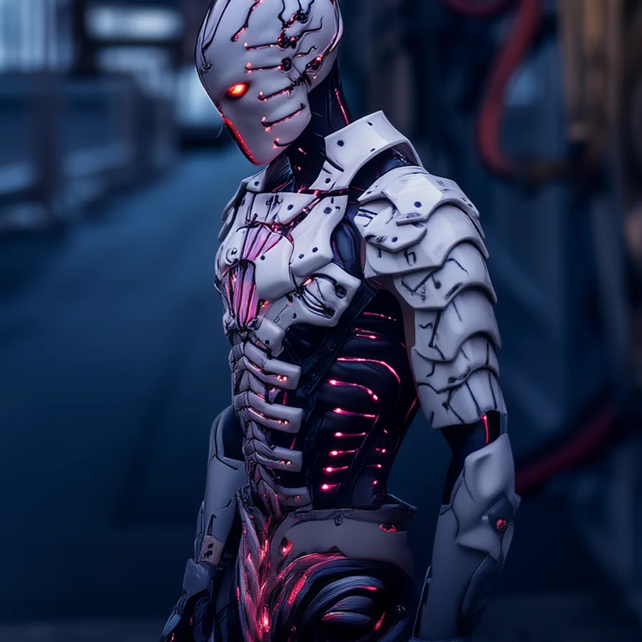
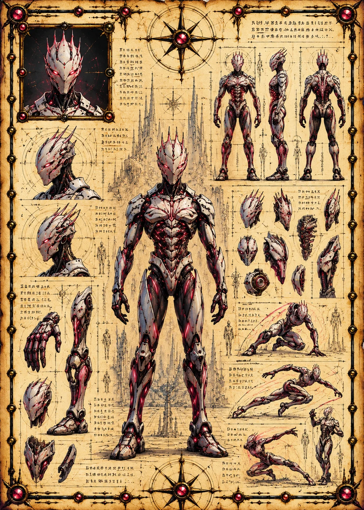

©
©
GENEZYS ARCHIVE · Earth 2 · Synthbot
Osen
Artillery Core

Archive record
Osen is a walking experiment in superheated plasma. The Ion Barrage hammers the center of an enemy line, and keeps hammering. Every shot is written into the Syndicate's Ledger, because every failure is data, and data is never wasted.
Combat signature
Ion Barrage
160 Cosmara
210 Animus
250 Vitalis
Experiments with superheated plasma: Deals 110 damage to the enemy in the middle for 2 rounds.
Genezys 04:04 ™&©2026LEGIONS
